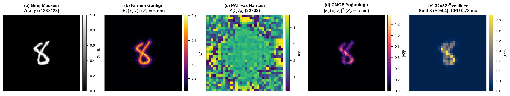
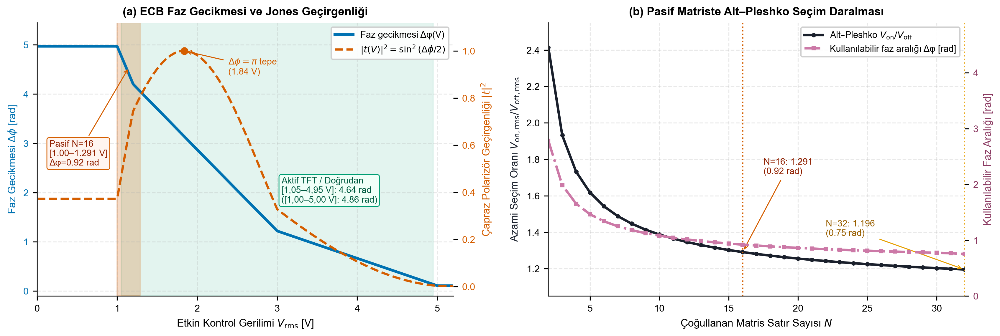
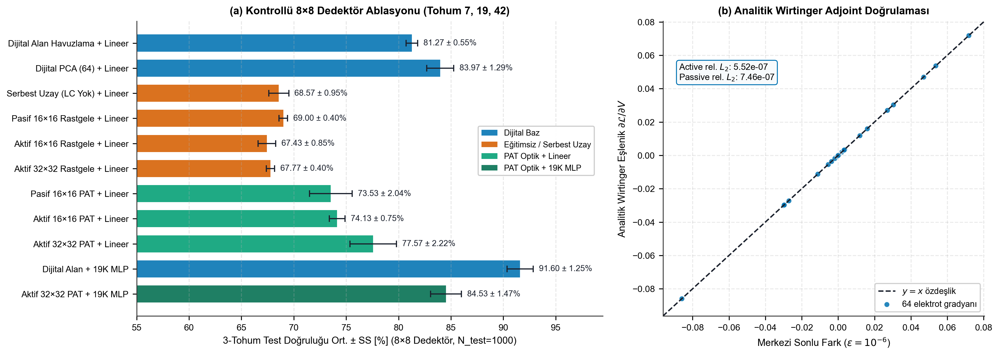
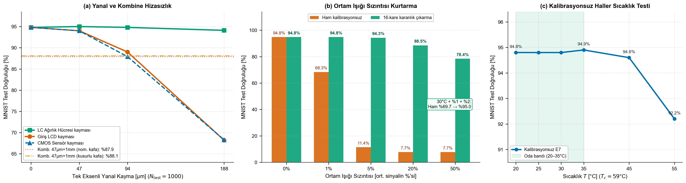
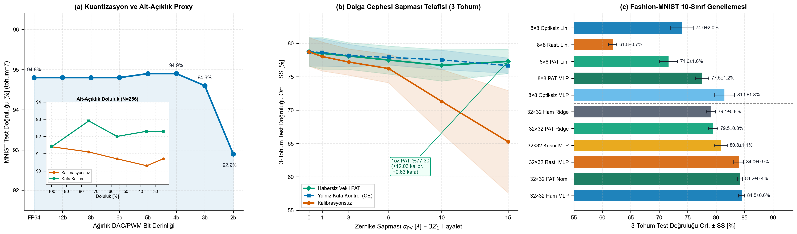

Modern CMOS ve GPU hızlandırıcılarında toplam çıkarım enerjisinin %60 ila %90'ı, aritmetik işlemlerden çok ağırlıkların ve aktivasyonların bellek hiyerarşisi ile ara bağlantılar boyunca taşınmasında harcanmaktadır [1], [2]. Serbest uzay ve entegre optik hesaplama mimarileri bu veri taşıma darboğazını analog düzeyde ele alır: yapılandırılmış kırınımlı veya faz modülasyonlu bir ortamdan geçen ışık alanı, 10 cm uzunluğundaki bir optik yoldan ~0,33 ns sürede geçerken uzamsal süperpozisyon yoluyla yoğun doğrusal dönüşümleri pasif biçimde icra eder [3]–[5].
3B baskılı kırınımlı derin sinir ağları (D²NN) terahertz bandında pasif sınıflandırma ortaya koymuş [5], ancak sabit dielektrik plakaların görev değişimine uyarlanamaması nedeniyle araştırmalar yeniden yapılandırılabilir sistemlere yönelmiştir. Takip eden çalışmalarda nanofotonik Mach–Zehnder ağları [6], büyük ölçekli kırınımlı işleme birimleri [7], entegre fotonik tensör çekirdekleri [8], zaman-dalga boyu çoğullaması [9] ve hibrit optik-elektronik evrişimli ön uçlar [10] geliştirilmiştir. Cep tipi sıvı kristal televizyonlarla başlayan [11] ve güncel uzamsal matris çarpıcılarla [12] sürdürülen paralel çalışmalar da ticari ekranların programlanabilir optik ağırlık olarak kullanılabileceğini göstermiştir.
Buna karşın deneysel erişilebilirliği kısıtlayan üç mühendislik engeli sürmektedir: laboratuvar tipi LCOS modülatörler düzlem başına 8.000–40.000 USD maliyet gerektirmekte; çift kollu interferometreler nanometre ölçeğindeki yol kaymalarında (λ/4 ≈ 133 nm) sönümlenmeye uğramakta [6]; ideal sayısal modellerde eğitilen ağırlıklar ise fiziksel hiza hataları ve pasif matrisli sıvı kristal hücrelerdeki etkin (RMS) voltaj kenetlenmesi nedeniyle doğruluk kaybetmektedir.
Bu makale, ZERRE (Model H) ortak-yol optoelektronik işlemci mimarisi ile açık kaynaklı dalga-optiği sayısal ikizinin tasarımını ve simülasyon analizini sunmaktadır; bu aşamada henüz fiziksel bir masaüstü prototip kurulmamış ve optik ölçüm alınmamıştır. Nematik sıvı kristallerdeki hacimsel saçılma sınırlarından [13] yola çıkılarak sekiz aday topoloji (Model A–H) taranmış ve birimi 40–60 USD olan monokrom mSLA 2K ekranlara dayalı düzlemsel 7 μm ince hücre mimarisi seçilmiştir. Alt–Pleshko teoremi [14] uygulanarak 16×16 pasif matris taramasının (1/5 gerilim öngerilimi) RMS seçim oranını 1,290994'e kısıtladığı ve kullanılabilir E7 faz aralığını 5,28× daraltarak 4,86 rad'dan 0,921 rad'a düşürdüğü gösterilmiştir. Son olarak, Açısal Spektrum yayılımı üzerinden kapalı form Wirtinger eşlenik gradyanı türetilerek kusurlu fiziksel sistem simülatörü üzerinde Fizik-Farkındalıklı Eğitim (PAT) [15], [16] uygulanmış; üç rastgele tohumda MNIST ve Fashion-MNIST başarımı mekanik, termal, ortam ışığı, bit kuantizasyonu, alt-açıklık doluluğu ve Zernike sapma testleriyle birlikte sayısal olarak değerlendirilmiştir.

Değerlendirilen sekiz kavramsal topolojiden (Model A–H) dört hacimsel nematik rezervuar tasarımı (32 elektrotlu Fibonacci küresi Model A, yarı-küre hibrit kase Model C, fotodiyot adreslemeli küre Model F ve küresel ITO matrisi Model G), üç boyutlu optik karışım sağlamak üzere santimetre ölçekli borosilikat kapları (Ø100 mm) Merck E7 ile doldurmayı incelemiştir. Ancak nematik fazda termal direktör dalgalanmaları, görünür dalga boylarında içsel soğurmadan yaklaşık iki mertebe daha güçlü Rayleigh–Gans saçılması üreterek αscat ≈ 15–40 dB/cm zayıflama oluşturur [13]. L = 10 cm optik yol boyunca balistik iletim kaybı 150–400 dB düzeyine ulaşır; koherent dalga cephesi foton difüzyonuna dönüşür ve mekanik sarsıntı altında sıvı çalkalanması direktör alanını bozar.
Buna karşılık E7 katmanını d ≤ 7 μm düzlemsel bir boşluğa hapsetmek saçılma kaybını 0,003–0,03 dB aralığına indirir ve kılcal kuvvetler sıvıyı sabitler. λ = 532 nm için 7 μm saf E7 (Δn = 0,225) 18,60 rad (≈ 5,92π) çok-mertebeli faz gecikmesi üretirken, tek-mertebeli çalışma penceresi
ya ticari mSLA TFT panellerdeki florlu nematik karışımlarla (Δneff ≈ 0,060, d = 7 μm), ya d = 1,87 μm ince E7 hücreyle, ya da 7 μm E7'nin V ≥ 2,2 V RMS öngerilim penceresinde sağlanır. Kalan düzlemsel ince hücre adayları arasında pasif 16×16 ITO plaka (Model B) Bölüm II-C'de incelenen çoğullama sınırına takılmakta, tek 7 katmanlı yığın (Model D) 7 μm hücre kesitini belirlemekte ve 3 katmanlı kaskad yığın (Model E) iletim kaybı ile hizalama maliyetini katlamakta; böylece tek ağırlık düzlemli ortak-yol mimari (Model H) uygulanabilir temel sentez olarak öne çıkmaktadır. Kalın hücre saçılmasına yönelik olası deneyler ise küre imalatı öncesinde düşük maliyetli 1 cm cam küvette yapılacak geçirgenlik testiyle sınırlandırılmıştır.
Maskeli stereolitografi (mSLA) 3B yazıcılar için seri üretilen monokrom LCD paneller, araştırma sınıfı LCOS modülatörlere erişilebilir bir seçenek oluşturur. Yaygın 5,5 inç paneller 1440×2560 piksel (~47 μm adım; ~6,1 inç modellerde 1620×2560) sunar, RGB renk filtresi ve arka aydınlatma içermeden çıplak transmisif vana olarak gelir ve standart HDMI–MIPI sürücü kartıyla 60 Hz 8-bit gri tonda 40–60 USD karşılığında temin edilir. TFT veri yolları net açıklık geçirgenliğini %4–%8 düzeyine düşürse de 100 mW 532 nm DPSS lazer ve milisaniye mertebesinde CMOS pozlaması bunu telafi eder; 16,7 ms çerçeve yenileme süresi de E7'nin ~50 ms viskoelastik gevşeme süresinden hızlıdır.

N×N elektrotlu bir örgüyü 2N satır/sütun kanalıyla zaman çoğullamalı (örneğin N = 16 için 1/5 gerilim öngerilimi) sürmek ilk bakışta ekonomik görünür. Ancak nematik sıvı kristallerdeki dielektrik tork elektrik alanın karesiyle (∝ E²) orantılı olduğundan ve ~50 ms pencere üzerinden ortalandığından, her hücre anlık darbeler yerine tüm tarama periyodu boyunca oluşan etkin (RMS) gerilime yanıt verir:
burada Urj ∈ [−1, +1] normalize sütun ağırlıklarıdır. Optimum Vsel/Vdata = √N (N = 16 için 4) oranında Alt–Pleshko teoremi [14] ulaşılabilir en yüksek seçim oranını
ile sınırlar. N = 16 satır için bu sınır √(5/3) ≈ 1,290994'tür (N = 32 için 1,195606'ya düşer). Seçilmemiş pikseller 1,00 V Freedericksz eşiğinde tutulduğunda seçili piksel en fazla 1,291 V RMS alabilir; böylece E7 faz modülasyon aralığı 4,86 rad'dan 0,921 rad'a (5,28× daralma, Şekil 2a) inerken Denklem (2)'deki toplam terimi sütun boyunca çapraz etkileşim oluşturur. Bu nedenle Model H, pasif tarama yerine doğrudan AC kuplajlı PWM kanallarını veya her pikselinde depolama kondansatörü barındıran ikinci bir aktif-matris TFT mSLA panelini benimser.
Giriş mSLA paneli tarafından genlik modülasyonuna uğratılan doğrusal polarize (0°) 532 nm düzlem dalga E0(x,y) = A(x,y) alanını oluşturur ve Z1 = 5 cm serbest uzay boyunca paraksiyel olmayan skaler Açısal Spektrum Yöntemi (ASM) ile yayılır [17]:
burada sönümlü bileşenler filtrelenir. Ağırlık düzleminde analitik model, çapraz polarizörler (0°/90°) arasında 45° yönlendirilmiş paralel-hizalı elektriksel kontrollü çift-kırılım (ECB) hücresi varsayar; küresel sabit faz haricinde skaler Jones geçişi
olup Z2 = 5 cm yayılımı sonrası ICMOS = |𝒫Z2{E1 ⊙ M(V)}|² yoğunluğu ortalanmış K×K dedektör bloklarında havuzlanarak f ∈ ℝK² vektörüne dönüştürülür (Şekil 1). Parçalı-doğrusal elektro-optik eğride gerilim arttıkça Δφ(V) monoton biçimde 4,97 rad'dan (1,00 V) 0,11 rad'a (5,00 V) inerken (4,86 rad toplam aralık; aktif PAT eniyileme sınırları [1,05, 4,95] V içinde 4,64 rad), |t(V)|² = sin²(Δφ/2) çarpanı monoton değildir ve Δφ = π noktasında tepe yapar (Şekil 2a). Denklem (6) ticari bükümlü nematik (TN) mSLA paneller için kapalı formda kuple genlik–faz vekili görevi görür [18]; TN panelle fiziksel kurulumda polarizör açılarının yeniden hizalanması ve deneysel kalibrasyon gerekir. PAT ileri/eşlenik FFT yayılımları complex64 duyarlıkta, PAT-dışı analitik taramalar ve değerlendirme yolları ise complex128 duyarlıkta yürütülür.
Piksel adımı Δx = 47 μm iken kritik ASM örnekleme boyutu Ncrit = λZ1/Δx² ≈ 12,0 pikseldir; dolayısıyla N = 128 (ve 256) ızgaraları Nyquist koşulunu on kattan fazla aşar. Z1 boyunca azami kırınım yayılması Z1λ/(2Δx) = 0,283 mm olup N = 128'deki 1,69 mm (2,63 mm giriş görüntüsü) ve 0,75 mm (4,51 mm aktif hücre) sıfır-dolgulu koruma bantlarının (N = 256'da 2,73 mm ve 1,50 mm) içinde kalarak dairesel sarmayı bastırır.
Yüzlerce elektrot için sonlu fark değerlendirmesi yapmadan skaler kayıp ℒ'nin V gerilimlerine göre türevini almak üzere, I = E2E2* için sensör düzlemindeki karmaşık Wirtinger hata alanı
biçiminde yazılır. Ayrık gerçel iç çarpım ⟨u, v⟩ = Re ∑ u*v altında ASM operatörünün Hermitik eşleniği −Z2 yönünde geri yayılımdır:
Her elektrot makro-pikseli Ωij üzerinden Gt,ij = ∑(u,v)∈Ωij E1*(u,v) Gmask(u,v) toplanıp dt/dφ = (1/2)eiφ uygulandığında tek bir ters/ileri FFT çiftiyle tam voltaj gradyanı elde edilir:
Merkezi sonlu farklarla (ε = 10−6) yapılan doğrulamada Denklem (9), aktif modda 5,52×10−7, pasif Alt–Pleshko zincir kuralı altında ise 7,46×10−7 bağıl L2 hatası vermektedir (Şekil 3b).

Gerçek optik düzeneklerde montaj kaymaları, sıcaklık sapmaları ve okuma gürültüsü bulunacağı için PAT döngüsü [15] ileri geçiş çıktılarını kusurlu fiziksel sistem simülatöründen alırken, optik geri adımları Denklemler (7)–(9) ile nominal sayısal ikiz üzerinden hesaplar (gradyansız yedek olarak SPSA [19] tutulur). Ortam ışığı sızıntısı altında sıfır varyansa yakın kenar piksellerinin standartlaştırmada şişmesini engellemek amacıyla 16 kareli gürültülü karanlık arka plan çıkarma ve yalnızca eğitim kümesine dayalı bir standart sapma tabanı uygulanır:
burada μtr ve σtr test sızıntısı olmadan yalnızca eğitim verisinden hesaplanır.
| Parametre | Değer / Şartname |
|---|---|
| Dalga boyu λ / Piksel adımı Δx | 532 nm / 47 μm |
| Eksenel mesafeler Z1, Z2 | 50 mm, 50 mm (10 cm yol, 0,33 ns) |
| Izgara boyutları N | 128×128 (6,02 mm), 256×256 (12,03 mm) |
| ASM kritik boyut / Yayılma | Ncrit = 12,0 px / 0,283 mm |
| Koruma bantları (N = 128) | 1,69 mm (giriş), 0,75 mm (ağırlık) |
| Aktif / Pasif kontrol sınırları | [1,05, 4,95] V (4,64 rad) / [−1, +1] (0,921 rad) |
| Eniyileyici | Adam (lropt = 0,07–0,10; lrhead = 2,5×10−2 / 2,5×10−3) |
| Düzenlileme / Takvim | 10−4 L2; 16–22 ep. (PAT), 40–45 ep. (MLP); erken durdurma |
| Kusurlu sistem hataları | 47 μm LCD/CMOS, +1,2/−0,8 mm Z, 29 °C, %2 drift |
| Tohumlar / Test örneği | {7, 19, 42} / bölme başına Ntest = 1000 |
Tüm sayısal deneyler Python 3.11.9 / NumPy 2.2.3 ortamında CPU üzerinde (Intel64 Family 6 Model 170) PAT yollarında complex64, PAT-dışı/değerlendirme yollarında complex128 duyarlıkla ve Tablo I'de özetlenen hiperparametrelerle çalıştırılmıştır. Elektronik okuma bant genişliği sıkı şekilde kısıtlandığında programlanabilir optik ağırlıkların net katkısını ölçmek için 8×8 = 64 dedektör üzerinde üç tohumla 11 eşleşmiş MNIST [20] yapılandırması karşılaştırılmıştır (Nfit = 2640, Nval = 360, Ntest = 1000). Fiziksel simülatör; vekil ikizin bilmediği 47 μm LCD ve sensör kayması, +1,2 mm/−0,8 mm eksenel hata, 29 °C Haller sıcaklık sapması [21], [22], %2 lazer drifti ve Gauss okuma gürültüsü içermektedir (Tablo II, Şekil 3a).
| # | Mimari / Yapılandırma | Opt. W | Dij. W | Test (%) |
|---|---|---|---|---|
| 1 | Dijital Alan Havuzlama (8×8) + Lineer | 0 | 650 | 81,27 ± 0,55 |
| 2 | Dijital PCA Temeli (64-boyut) + Lineer | 0 | 650ᵃ | 83,97 ± 1,29 |
| 3 | Yalnız Serbest Uzay Kırınımı (LC Yok) | 0 | 650 | 68,57 ± 0,95 |
| 4 | Pasif 16×16 Rastgele + Lineer | 256 | 650 | 69,00 ± 0,40 |
| 5 | Aktif 16×16 Rastgele + Lineer | 256 | 650 | 67,43 ± 0,85 |
| 6 | Aktif 32×32 Rastgele + Lineer | 1.024 | 650 | 67,77 ± 0,40 |
| 7 | Pasif 16×16 + PAT + Lineer | 256 | 650 | 73,53 ± 2,04 |
| 8 | Aktif 16×16 + PAT + Lineer | 256 | 650 | 74,13 ± 0,75 |
| 9 | Aktif 32×32 + PAT + Lineer | 1.024 | 650 | 77,57 ± 2,22 |
| 10 | Dijital Alan Havuzlama (8×8) + MLP | 0 | 19.210 | 91,60 ± 1,25 |
| 11 | Aktif 32×32 + PAT + MLP | 1.024 | 19.210 | 84,53 ± 1,47 |
Tablo II iki net sonuç ortaya koymaktadır. Birincisi, optimize edilmemiş kırınım, uzamsal enerjiyi kaba pikseller arasında dağıttığı için doğrudan 8×8 dijital görüntülemeye göre doğruluğu belirgin biçimde düşürür (%67,77–%69,00'a karşı %81,27). 32×32 aktif LC ağırlıklarının PAT ile eniyilenmesi, eşleşmiş rastgele optiğe kıyasla +9,80 puan (%67,77 → %77,57) ve yalın serbest uzaya kıyasla +9,00 puan kazanım sağlar. Buna karşın 16×16 optik çözünürlükte pasif PAT (%73,53 ± 2,04) ile aktif PAT (%74,13 ± 0,75) bir standart sapma içinde istatistiksel olarak eşdeğerdir, çünkü dar 8×8 okuma faz aralığından çok okuma sırasını (rank) kısıtlamaktadır. İkincisi, pozitif kare-yasa yoğunluğu üzerinde çalışan tek bir programlanabilir kırınım katmanı, gürültüsüz dijital 8×8 alan havuzlamanın (%77,57 ve %81,27; 19K MLP ile %84,53 ve %91,60) gerisinde kalırken veri güdümlü dijital PCA-64 izdüşümü doğrusal üst sınırı %83,97 ± 1,29 olarak belirler.
CMOS dedektör örgüsünün 32×32 (1.024 özellik) boyutuna çıkarılması, hem MNIST [20] hem de 10 sınıflı Fashion-MNIST [23] veri kümelerinde optik ve elektronik kapasitenin nasıl etkileştiğini açıkça gösterir (Tablo III). Ntrain = 6000 iken düzenlileştirilmiş Ridge lineer okuyucuyla sabit rastgele 32×32 optik maske MNIST'te ham 28×28 pikselleri geçerken (%85,57 ± 1,76 ve %82,93 ± 1,70), Fashion-MNIST'te PAT-eğitimli 32×32 Ridge okuyucu ham piksellerle 1 standart sapma içinde karşılaştırılabilirdir (%79,50 ± 0,80 ve %79,07 ± 0,81).
| Yapılandırma | Opt. W | Dij. W | MNIST (%) | F-MNIST (%) |
|---|---|---|---|---|
| Ham 28×28 Dijital Ridge (N=6k) | 0 | 7.850 | 82,93 ± 1,70 | 79,07 ± 0,81 |
| Opt. 16×16, 256öz. Ridge (N=2,5k) | 256 | 2.570 | 81,73 ± 0,72 | — |
| Opt. 16×16, 1024öz. Ridge (N=2,5k) | 256 | 10.250 | 84,77 ± 1,00 | — |
| Opt. 32×32 Rast., 1024öz. Ridge (N=6k) | 1.024 | 10.250 | 85,57 ± 1,76 | — |
| Opt. 32×32 PAT, 1024öz. Ridge (N=6k) | 1.024 | 10.250 | — | 79,50 ± 0,80 |
| Ham 28×28 Dijital MLP (N=6k) | 0 | 203.530 | 93,93 ± 0,99 | 84,47 ± 0,55 |
| 32×32 Rastgele Optik + MLP | 1.024 | 264.970 | 94,20 ± 0,95 | 83,97 ± 0,86 |
| 32×32 PAT + MLP (Kusurlu) | 1.024 | 264.970 | 89,77 ± 3,27 | 80,80 ± 1,15 |
| 32×32 PAT + MLP (Kalibre) | 1.024 | 264.970 | 94,37 ± 0,84 | 84,20 ± 0,44 |
Buna karşılık 1024→256→10 ReLU MLP (264.970 dijital ağırlık) eklendiğinde sınıflandırma başarımını elektronik kapasite belirler: kalibre nominal PAT (%94,37 MNIST, %84,20 Fashion-MNIST), sabit rastgele optikli MLP (%94,20 ve %83,97) ve ham piksel MLP (%93,93 ve %84,47) yaklaşık 0,5 puan içinde toplanmaktadır; telafi edilmemiş kusurlu sistemde ise PAT MLP %89,77 (MNIST) ve %80,80 (Fashion-MNIST) elde etmektedir. Kısıtlı 8×8 Fashion-MNIST rejiminde ise (Şekil 5c) PAT lineer sınıflandırma rastgele optiği yine +9,80 puan aşarak %71,63'e (%61,83'e karşı), 19K MLP ile %77,53'e ulaşmakta; doğrudan 8×8 dijital havuzlama %74,00 (lineer) ve %81,47 (MLP) vermektedir.

Harici referans kolu içermeyen ortak-yol optik düzlemde eksenel yoğunluk toleransı Talbot uzunluğuyla (zT = 2Δx²/λ ≈ 8,3 mm) belirlenir. 1.000 MNIST test örneğinde (tohum 7, baz %94,8, Şekil 4a), LC ağırlık katmanının 188 μm yanal kayması en fazla 0,7 puan kayıp oluşturur (%94,8 → %94,1) çünkü gelen alan uzamsal olarak yumuşaktır. Giriş LCD ve CMOS sensör kaymaları 47 μm (%94,0) ötesinde daha keskin düşer (188 μm'de %68,2 ve %68,3); eksenel ΔZ1 ∈ [0, 8 mm] sapmaları ise %94,7–%95,1 aralığında kalır. Tüm düzlemlerin eşzamanlı 47 μm yanal ve +1 mm eksenel kaydığı kombine testte nominal kafa %87,9'a (−6,9 puan) inerken, pertürbe sistemle eğitilmiş kafa %87,8 bazına göre %88,1 değerini korur.
Haller bağıntısıyla [21], [22] modellenen termal kaymada:
kalibrasyonsuz doğruluk 20–35 °C arasında %94,8–%94,9 düzeyinde kalıp berraklaşma noktasına yakın 55 °C'de %92,2'ye iner (Şekil 4c). Arka plan çıkarma olmadan ortalama sinyalin %1 ve %5'i kadar ortam ışığı sızıntısı doğruluğu %68,3 ve %11,4'e düşürürken, 16 kareli karanlık arka plan çıkarma ve Denklem (10) sırasıyla %94,8 (%1), %94,3 (%5), %88,5 (%20) ve %78,4 (%50) sağlar; kombine 30 °C + %1 sızıntı + %2 lazer drift testini ise %69,7'den %95,0'a çıkarır. Lazer gücü ±10% değiştiğinde doğruluk %94,7–%95,0 aralığındadır.

Masaüstü kurulumu öncesi üç ek gerçekçilik testi daha yürütülmüştür (Şekil 5a–b). 8-bit HDMI giriş ve b-bit LC kontrol gerilimi kuantizasyonunda (tohum 7) doğruluk 4-bit'e (16 gerilim seviyesi) kadar %94,8–%94,9'da kalıp 3-bit'te %94,6 ve 2-bit'te %92,9 olmaktadır. N = 256 ızgarada %100'den %25'e inen makro-piksel alt-açıklık vekil testinde kalibrasyonsuz doğruluk %91,4'ten %90,7'ye inerken, dijital kafa yeniden kalibrasyonu %92,3 sağlamaktadır.
Beşinci derece Zernike sapmaları (0–15λ PV) ile 3Z1 Fabry–Pérot hayaleti (0,04 genlik) eklendiğinde, tüm koşullar eşit çapraz entropi Adam kafasıyla değerlendirildiğinde dikkate değer bir ayrım görülür (Şekil 5b): 1λ–10λ aralığında donmuş optikle yalnız kafayı yeniden kalibre etmek kaybın neredeyse tamamını telafi ederek (%78,63 ve %77,53) habersiz vekil PAT'ye (%78,50 ve %76,70) denk sonuç verirken, ağır 15λ sapmada kalibrasyonsuz sistem %65,27 ± 7,67'ye düşmekte, yalnız-kafa kalibrasyonu %76,67 ± 1,15'e, ortak optik adaptasyonlu PAT ise %77,30 ± 1,82'ye ulaşmaktadır.
| Alt Sistem | Seçilen Donanım | Tutar (USD) |
|---|---|---|
| Optik Giriş | 532 nm DPSS (100 mW) + Genişletici + mSLA LCD | 150 |
| Aktif Ağırlıklar | 2. mSLA TFT-LCD (veya ITO Hücre + AC-PWM) | 90–230 |
| Okuma ve Kontrol | RPi Camera 3 (IMX708, 12 MP) + M12 + RPi 5 | 125 |
| Optomekanik | Optik Ray, Tutucular, Karartılmış Kutu, Filtre | 262 |
| Ara Toplam | Temel optik ve elektronik bileşenler | 627–767 |
| Toplam (+%25) | Yedek payı dahil masaüstü prototip | 784–959 |
Tablo IV'te kalemlendirilen modüler optik ray kurulumu doğrudan bileşenlerde 627–767 USD, %25 yedek payıyla 784–959 USD tutmaktadır. Sistemde üç farklı zaman ölçeği birbirinden ayrı tutulmalıdır: 10 cm optik yol boyunca koherent foton geçişi ~0,33 ns sürerken, gerçek donanım akış hızını 60 Hz LCD/kamera çerçeve döngüsü (~16,7 ms) ve ağırlık güncellemelerinde ~50 ms nematik gevşeme süresi belirler; N = 128² ızgarada CPU üzerindeki derlenmemiş NumPy ASM simülasyonu ise 50 çalışmada 0,78 ms ortanca sürede (Intel64 Family 6 Model 170 CPU, Python 3.11.9 / NumPy 2.2.3, ortalama 0,87 ms, IQR 0,08 ms, aralık 0,71–2,74 ms) tamamlanmaktadır.
Fiziksel montaj basitleştirilmiş 2B modellerde yer almayan üç mühendislik koşulu gerektirir: RPi Camera Module 3'ün IMX708 sensörü (6,45 × 3,63 mm) kısa eksende 4,51–6,02 mm kırınım alanından dar olduğundan ~1,6× küçültücü M12 röle optiği gerekir; 100 mW 532 nm DPSS lazer Sınıf 3B olması nedeniyle OD 4+ gözlük, ışık sızdırmaz kasa ve 808/1064 nm pompa kaçağını kesen IR filtre gerektirir; ayrıca PCA9685 PWM kartları tek kutuplu darbe ürettiğinden çıplak ITO elektrotlarda elektrolizi önlemek için AC polarite-evirici sürücü devre olmadan kullanılmamalıdır.
Altı temel sınırlılık bu sayısal bulguların kapsamını belirlemektedir. İlk olarak tüm doğruluk ve dayanıklılık verileri dalga-optiği simülasyonlarına dayanmaktadır; fiziksel kurulum, hizalama ve gerçek sensör gürültüsü ölçümleri sonraki deneysel aşamayı oluşturmaktadır. İkinci olarak 8×8 dedektörlerde PAT optik katmanı rastgele optiği +9,80 puan aşsa da doğrudan dijital alan havuzlamanın gerisinde kalmakta (%77,57 ve %81,27), 32×32'de 265K parametreli MLP eklendiğinde ise sınıflandırmayı elektronik kafa baskılayarak farkları ~0,5 puan içine sıkıştırmaktadır.
Üçüncü sınırlılık Denklem (6)'nın paralel ECB hücresini modellemesidir; ticari TN mSLA panellerdeki polarizasyon dönüşü [18] deneysel lookup tablosu gerektirir. Dördüncüsü, skaler simülasyonlar monokrom düzlem dalga varsaymakta; DPSS lazer benek gürültüsü, sonlu koherens uzunluğu ve 0,04 hayalet dışındaki çoklu yansımaları ihmal etmektedir. Beşincisi, her 32×32 ağırlık bloğu onlarca 47 μm mSLA alt-pikselini grupladığından N = 256 alt-açıklık testi ölçeklenmiş bir vekil niteliğindedir. Altıncısı, tek bir kusurlu düzenek için eğitilen ağırlıklar, Keskinlik-Farkındalıklı Eğitim [24] gibi yöntemlerle genişletilmedikçe farklı hizalanmış ikinci bir hücreye doğrudan aktarılamaz.
Nematik Rayleigh–Gans saçılma sınırları (15–40 dB/cm) ve Alt–Pleshko RMS voltaj kısıtları (5,28× daralma) temelinde sentezlenen ortak-yol ZERRE (Model H) mimarisi, ticari mSLA ekranları 784–959 USD bütçe sınırı içinde bir araya getirmektedir. Skaler ASM kırınımı üzerinden türetilen Wirtinger eşlenik operatörü, kusurlu simülasyonlarda PAT eğitimini mümkün kılarak 8×8 lineer MNIST doğruluğunu rastgele optiğe göre +9,80 puan artırmış (%77,57), 32×32 hibrit okuma ile MNIST'te %94,37 ve Fashion-MNIST'te %84,20 başarım elde etmiş; ayrıca tek-katman optik ağırlıkların sınırlarını ve deneysel kurulum adımlarını açıkça ortaya koymuştur.
Tüm Python dalga-optiği simülasyon kodları (zerre_twin.py, zerre_pat_torch.py), etkileşimli WebGL/ASM görselleştiricisi (start_server.py), otomatik fizik birim testleri (tests/test_zerre_physics.py), 3 tohumlu kıyaslama çıktıları (makale/scripts/paper_results.json) ve şekil/makale derleme betikleri; yazılım kodları için MIT Lisansı, makale metni ve şekiller için ise CC BY 4.0 Lisansı altında standart MNIST ve Fashion-MNIST yerel önbellek desteğiyle https://github.com/hamzasolak/zerre adresinde (sürüm etiketi v0.4.0; Yazar ORCID: 0009-0004-7541-9620) yayımlanmaktadır.
Bu çalışma herhangi bir kurum veya ticari fon desteği olmaksızın bağımsız araştırma olarak yürütülmüştür.
Yazar herhangi bir çıkar çatışması bulunmadığını beyan eder.
Makalenin I–VI. Bölümlerinde üslup düzenleme, LaTeX biçimlendirme ve kod-doğrulama denetimi için üretken yapay zekâ araçlarından (Gemini ve Claude) yararlanılmıştır; fiziksel tasarım, dalga-optiği simülasyon kodları, çok-tohumlu deneylerin yürütülmesi ve tüm bilimsel iddialar ile sonuçlar tamamen yazarın sorumluluğundadır.